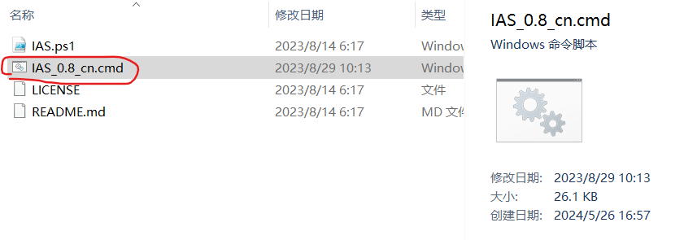
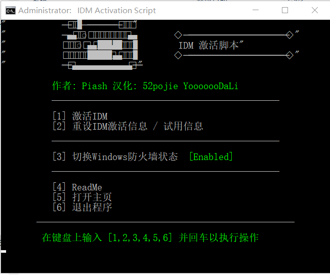
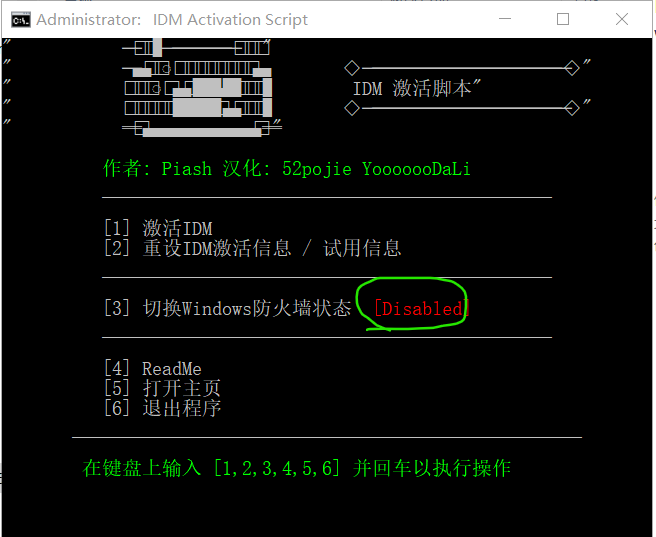
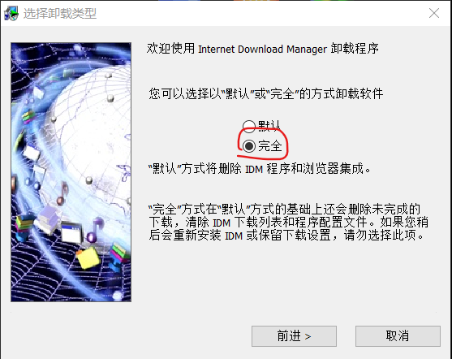

HJTV
idm下载器破解方法
idm官方下载地址
官网：idm官网
idm破解工具下载和使用
使用方法：
法一：如果idm还在使用期内
1.打开破解工具，以管理员身份运行图中红圈中的文件。

2.输入“3”，回车，以关闭windows防火墙。

当图中绿圈中文字是“[Disabled]”时，防火墙就关闭了

3.输入“1”，回车，开始激活。中间idm可能会自动下载一些文件，不用管，下载下来的文件不要打开。
法二：如果idm试用期过期
1.卸载idm，一定要选择完全卸载！

2.打开破解工具，以管理员身份运行图中红圈中的文件。
3.输入“3”，回车，以关闭windows防火墙。
当图中绿圈中文字是“[Disabled]”时，防火墙就关闭了
4.输入“1”，回车，开始激活。中间idm可能会自动下载一些文件，不用管，下载下来的文件不要打开。
idm破解工具下载下载：本站下载（可能会有一点慢） 123云盘下载